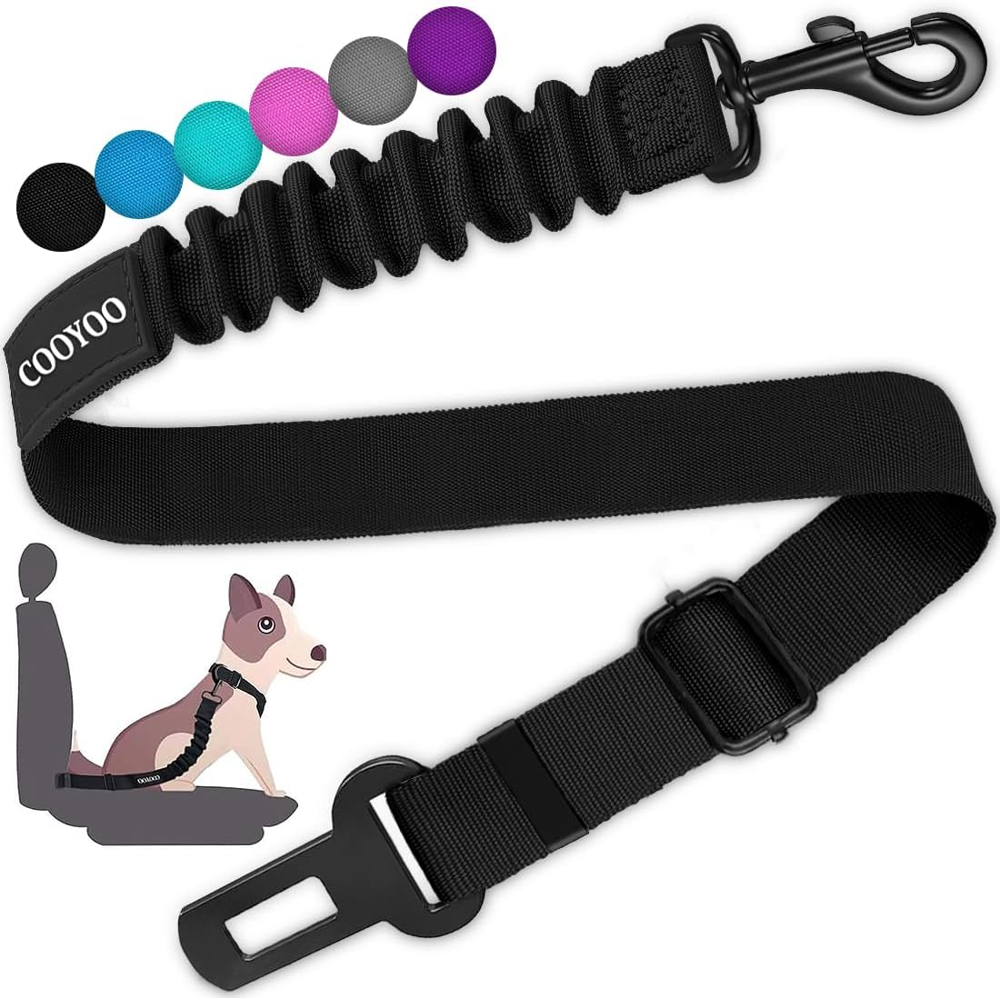

🚗 Guía de Seguridad: Viajes en Carro con tu Mascota
¿Listo para el próximo viaje por carretera? Llevar a tu perro o gato en el coche es divertido, pero la seguridad es lo primero. Evita multas y accidentes siguiendo estas reglas básicas de tránsito y confort:
Normas críticas para trayectos en coche:
- Nunca sueltos: En caso de frenazo, un animal suelto se convierte en un proyectil peligroso. Usa siempre sistemas de retención homologados.
- Controla la temperatura: Los golpes de calor ocurren en minutos. Mantén el aire acondicionado encendido y nunca los dejes solos dentro del coche.
- Paradas frecuentes: Planifica descansos cada 2 horas para que estiren las patas, beban agua fresca y hagan sus necesidades.

1. Protector de Asiento Impermeable (Tipo Hamaca)
¿Por qué lo necesitas? No solo protege tu tapicería de pelos, lodo y arañazos; su diseño tipo hamaca evita que tu mascota caiga al suelo del coche ante un frenazo brusco, creando un espacio cerrado y seguro para que descanse.
🛒 Ver Protector en Amazon
2. Cinturón de Seguridad Elástico con Amortiguación
Seguridad obligatoria: Este cinturón se engancha directamente al arnés de tu mascota y al anclaje del coche. Cuenta con un tejido elástico que absorbe los impactos, dándole la libertad justa para sentarse o tumbarse sin poner en riesgo su vida.
🛒 Ver Cinturón de Seguridad